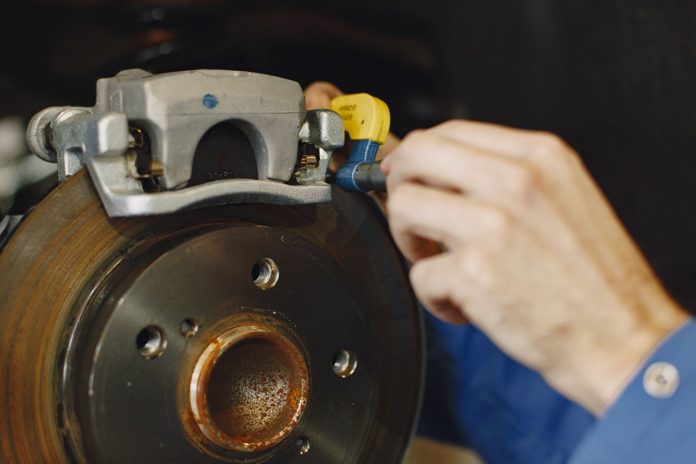

Conteúdo prático sobre manutenção automotiva, direto da equipe da Maynard Auto Center em Salvador.

Saiba quando é a hora de trocar o óleo do carro: por quilometragem, por tempo e pelos sinais que o carro dá.

Carro balançando muito, barulho em buracos ou volante tremendo? Veja 5 sinais de que a suspensão precisa de revisão.

Descubra o que é o checkup eletrônico do carro, como funciona o diagnóstico automotivo e quando fazer.
A vida útil do freio varia de 20.000 a 60.000 km. Veja o que afeta a durabilidade das pastilhas, discos e fluido.

Entenda de vez a diferença entre alinhamento e balanceamento de rodas, quando fazer cada um e o que acontece se deixar passar.
Checklist completo para preparar o carro antes de uma viagem longa: freios, pneus, óleo, fluidos, bateria e mais.

Procurando oficina para carro importado em Salvador? Saiba o que diferencia uma oficina preparada de uma que não é.
Saiba o que avaliar antes de escolher uma oficina mecânica em Salvador: equipamento, orçamento transparente, avaliações.
Resposta rápida, diagnóstico honesto e orçamento antes de qualquer serviço.